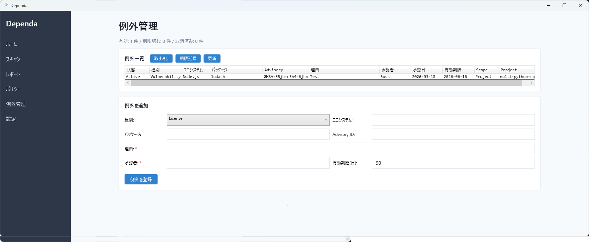
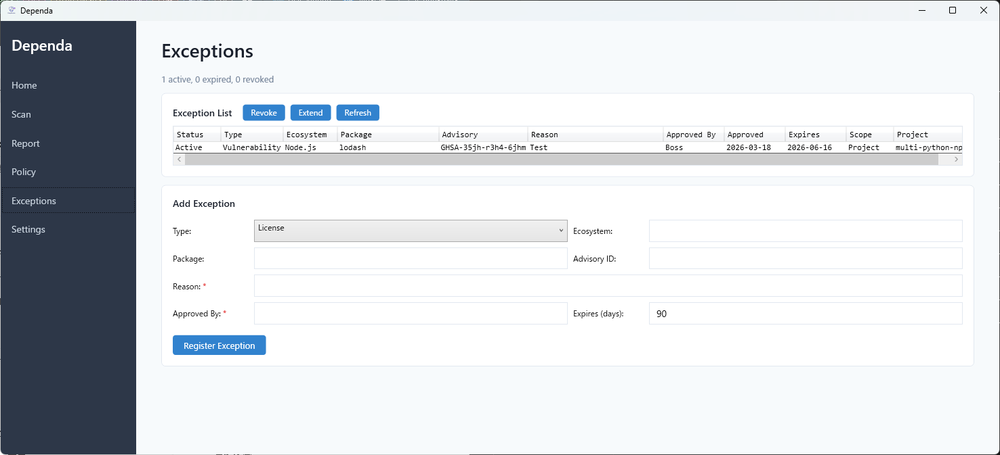

例外管理
検出された問題を「承知の上で許容する」記録を管理します。Pro
概要
例外管理は、スキャンで検出された脆弱性やライセンス問題に対して「例外として許容する」という判断を記録する機能です。例外は「無視」ではなく「管理下で承認された状態」として扱われます。
v2.0 のレビューワークフローと連携し、例外の承認状態もレビューステータスに反映されます。

例外管理画面 — 登録済み例外の一覧・ステータス・期限管理
例外の登録方法
スキャン結果画面から直接登録（推奨）
- スキャンまたは SBOM インポートを実行します。
- 脆弱性一覧またはライセンス一覧で、例外にしたい行を選択します。
- ヘッダ横の「例外登録」ボタンをクリックします。
- ダイアログが開き、種別・エコシステム・パッケージ名・Advisory ID が自動入力されます。
- 理由、承認者、有効期間（日数）を入力し、「登録」をクリックします。
例外管理ページから登録
サイドメニューの「例外管理」から手動で登録することもできます。台帳管理用です。
例外のライフサイクル
| 状態 | 意味 | 遷移 |
|---|
| Active | 有効。ポリシー判定で例外として扱われます。 | 登録時 |
| Expired | 有効期限切れ。再レビューが必要です。 | 自動（期限経過時） |
| Revoked | 手動で取り消し。監査証跡として残ります。 | 手動（取り消しボタン） |
例外は削除されません。Revoked / Expired として監査証跡が残ります。
スコープ
- プロジェクト個別（既定）— 特定のプロジェクトのみに適用されます。
- 共通例外（Global） — 全プロジェクトに適用されます。慎重に使用してください。
例外の反映
- GUI — 脆弱性・ライセンスのボタンが「例外適用済み」に変わります。
- ポリシー判定 — 「例外適用済み: N 件 / 未解決: M 件」が表示されます。
- HTML レポート — 例外管理セクションに適用済み例外が表示されます。
- CSV — ExceptionStatus 列に Applied (Project) / Applied (Global) が出力されます。
例外管理ページの操作
- 取り消し — 選択した例外を Revoked に変更します。
- 期限延長 — 選択した例外の期限を延長します（旧例外は Revoke され、新しい例外が作成されます）。
- 更新 — 期限切れの自動検出と一覧の再読み込みを行います。
保存形式
例外は dependa-exceptions.json として保存されます。Git で管理可能です。
Exception Management
Record approved exceptions for detected issues with full audit trail. Pro
Overview
Exception management lets you record deliberate decisions to accept known vulnerabilities or license issues. Exceptions are not "ignoring" — they are "approved under management".
In v2.0, exceptions integrate with the review workflow, and exception approval status is reflected in the review status.

Exception management screen — registered exceptions, status, and expiration tracking
Registering Exceptions
From Scan Results (Recommended)
- Run a scan or SBOM import.
- Select a row in the Vulnerabilities or Licenses list.
- Click the "Register Exception" button next to the section header.
- A dialog opens with Type, Ecosystem, Package, and Advisory ID pre-filled.
- Enter Reason, Approved By, and Expires (days), then click "Register".
From Exception Management Page
You can also register exceptions manually from the "Exceptions" page in the sidebar. This is useful for ledger management.
Exception Lifecycle
| Status | Meaning | Transition |
|---|
| Active | Effective. The exception is applied during policy evaluation. | On registration |
| Expired | Past expiry date. Re-review required. | Automatic |
| Revoked | Manually cancelled. Kept as audit trail. | Manual (Revoke button) |
Exceptions are never deleted. Revoked and Expired entries remain as audit evidence.
Scope
- Project (default) — applies only to the specific project.
- Global — applies to all projects. Use with caution.
Reflection in Results
- GUI — exception buttons change to "Exception Applied".
- Policy — shows "N of M issues excepted, K unresolved".
- HTML Report — Exception Management section with applied exceptions table.
- CSV — ExceptionStatus column shows Applied (Project) / Applied (Global).
Exception Page Operations
- Revoke — changes selected exception to Revoked status.
- Extend — extends the expiry (old exception is revoked, new one created).
- Refresh — auto-expires outdated entries and reloads the list.
Storage
Exceptions are saved as dependa-exceptions.json. This file can be tracked in Git.